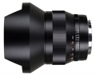

器材库 > 35mm画幅MF定焦镜头 > Distagon T* 15/2.8

详细规格
镜头类型
超广角镜头
发布日期
2012-03-16
厂家推荐价格
2,948.00 （美元）
焦距
15mm
最大光圈
f/2.8
最小光圈
f/22
视角（对角）
110°
视角（水平）
100°
视角（垂直）
76°
镜头结构
15片/12组
非球面镜片
2片
低/超低色散镜片
5片
最近对焦距离
25cm
最大放大倍率
0.111倍
滤镜口径
95mm
镜头卡口
Canon EF, Nikon F
防抖
否
颜色
黑色
尺寸
（ZF.2）132×103mm / （ZE）135×103mm
重量
（ZF.2）730g / （ZE）820g
该产品暂无存档的网友点评
产品图 / 样片
评测 / 相关文章
- 感受超广阔视野 卡尔蔡司Distagon T* 15/2.8试用 （存档）
- ［试用］蔡司超广Distagon T* 2.8/15 ZE （存档）
- ［试用］D800配蔡司15/2.8拍摄绝美日落 （存档）
- ［资讯］蔡司正式发布超广角镜头Distagon T* 15/2.8 （存档）